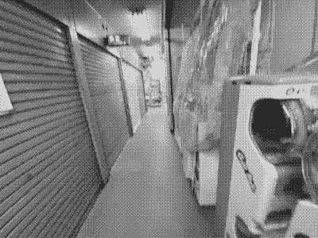

Ichigojam - 集成晶體森林 裡的 活化石 (1)
這次我前往日本，尋找 集成晶體森林 裡的 活化石。
上圖是 ichigojam 官方位於秋葉原的店鋪。通常 2、3點開店，7點就隨著 Tokyo Radio Department Store 打烊了。（雖然官方營業時間寫 12:00，但我這10幾天去都是比較晚開）
可能是因為它只面向日本吧？我在網路上找到的所有資源都是日文的，這也是我最近開始學日文的原因，因為跟店員問他們都聽不太懂英文
這塊板子它有一個NTSC的影像輸出和一個PS2 的鍵盤輸入，然後還有一個 on board MCU，透過這樣簡單的組合拼湊出一個簡單的電腦。（上面的那個USB口其實是PS2的輸入。我當時拿到也覺得很奇怪，因為不是每個鍵盤都支援透過USB傳輸PS2的訊號。）
我猜是因為在日本這些接口的設備比較容易找到吧？就如同ZX80的理念，簡單、便宜、家裡有的設備隨插即用（就算找不到PS2鍵盤，二手商店裡隨便翻都有，日本的二手市場做得比台灣好很多）
可惜的這塊板子上是作者自己寫的閉源系統，還禁止「不修改重新發行（簡稱分享）」，看到這種情況有點失望，但我很佩服他的理念繼承了Commondore 、ZX 80/spectrum 的精神。但也畢竟commondore也從來沒開源它的ROM，只是不同的是 commondore 用了影像驅動晶片，但這塊開發板把RCA影像驅動寫在MCU裡。
身為資工系，學習舊往的科技可能是學習的手段。畢竟停滯不前在現今科技日新月異的年代是種「退步」，為了「卓越」可能必須捨棄到許多對我來說很有意義的事物。
但其實我原本還妄想要買 Family BASIC（中古），但是後來意外發現這台從我國中就想要的小電腦。難得在2023年找到這種「活化石」，真的很難放手。同時我也很好奇那種連買電腦都會附「編程手冊」和 電路圖 的年代（Commondore），系統也沒到現在複雜，變異性低、可重構性很高，技術原理往往觸手可及。
這次一次去東京就是17天，在這些日子裡我幾乎都是每天起床跑完行程下午 6 點趁著 東京無線電材料大樓 還沒關門前衝到秋葉原買前一晚研究到的東西（我在猜可能老闆都快認識我了）。除了中間有幾天去了比較遠的地方，要不然基本上我下午都往秋葉原跑。到了晚上睡前就會打開記事本開始在網路上蒐集明天可能需要買哪些材料、板子，哪些東西最符合我的理想。
這台電腦它可以做很多事情⋯⋯如果我接上 EEPROM 我可以像磁帶一樣把檔案和程式儲存在IC裡，如果我接上有AT command 的 ESP-01 我就可以通過 TCP 利用 IRC 在網路上聊天、連結伺服器，如果我用 USB module 我就可以存取 USB 裡的圖片和資料。因為它是「電腦」，只有你想不到的沒有你做不到的（當然只要你願意動手做）。
所以為什麼？
最近我一直在思考，也是為什麼我會想要花我17天的時間在尋找和研究。長久下來我一直都有個危機意識：「假如哪一天這個東西不能用了，該怎麼辦？」，雖然現今許多的開發板、SBC、FPGA 可以解決或實作的事物，但我還是無法為這個理由鬆手。
這並不代表我不想進步、卓越。我會說「我是被以往的科技感動了」，我對於那種觸手可及的科技常有好感。
前面也有提到他的特質「隨插即用、不需要灌系統、也不需要設定」，也是基於這個理念，因為你不可能隨便 sudo 把 root 刪掉，你在 ichigojam 上做不了，它沒有那種功能。
我曾經就做過這種蠢事，在mac上執行
rm /。
具體概念我啟蒙於 hundred rabbits 的處境。他們是一個藝術與媒體的工作室，工作室就是在一艘船上。早期當船航行到海中央時是完全沒有網路、支援的，於是基於種種困難與原因之下，他們決定要改變他們開發的方式。這種基於永續的開發方式和computing感動了我，同時讓我產生共鳴。
所以對我來說：表面上說是永續，但實際上是對未來的一種不安、害怕。在得知 ichigojam 系統是閉源且限制授權的情況下，我是感到恐懼的。而且在實證後發現 hundred rabbits 所開發較為永續的結局方案 – Uxn 是無法直接實作在 Ichigojam 上的，除非擴充 RAM。這樣我對於這台電腦的熱情又澆了一桶冷水。
結論
在這之後我可能會繼續研究如何擴充 Ichigojam 的方式，如果有新進展就會更新在新的文章中。
我也嘗試開始改變我寫作的方式，從說教轉為陳述故事。希望透過改變以往的撰寫方式盡可能的用故事呈現出專案背後的意義和價值。
以上。